Stay informed about our latest initiatives, success stories, and community impact
15Nov 2025
Featured
By Sarah Johnson 5 min readEducation
Transforming Lives Through Education: Our Annual Report
This year, ASKBTM has impacted over 1,200 children through our educational programs. Our latest report highlights the incredible progress made in early childhood development and primary education initiatives across our centers...
In the past year, ASKBTM has made a profound impact on the lives of over 1,200 children through our diverse and innovative educational programs. Our latest report intricately details the significant advancements we've achieved in the realms of early childhood development and primary education initiatives across our numerous centers.
By implementing evidence-based practices and creating tailored learning experiences, we have been able to cater to the unique needs of each child. Our dedicated team of educators, trained in the latest pedagogical approaches, has fostered an engaging atmosphere where young learners can explore and grow. Through interactive activities, hands-on learning, and a focus on critical thinking, we have ignited a passion for learning that extends beyond the classroom.
Additionally, we have expanded our community outreach efforts, collaborating with families and local organizations to ensure that all children have access to quality education. The transformations observed in our students are not merely statistical; they are reflected in their newfound confidence, enthusiasm for learning, and brighter futures. As we continue on this journey, we remain committed to empowering even more children throughout our communities, driving meaningful change one child at a time.
05Nov 2025
By Michael Chen 4 min readVolunteer
Volunteer Spotlight: Meet Our Amazing Team
Our volunteers are the backbone of ASKBTM. This month, we're highlighting the incredible work of our teaching assistants who have dedicated over 5,000 combined hours to supporting our educational programs...
At ASKBTM, our volunteers are the heart and soul of our organization. This month, we're thrilled to shine a spotlight on our incredible team of teaching assistants who have collectively dedicated over 5,000 hours to supporting our educational initiatives. Their unwavering commitment has been instrumental in helping us create a nurturing learning environment for all our students.
From assisting with lesson planning to providing one-on-one support to students who need extra help, our volunteers wear many hats. Their diverse backgrounds and skills bring a wealth of knowledge to our classrooms, enriching the learning experience for both students and staff alike. Many of our volunteers are education students or retired teachers, each bringing unique perspectives that enhance our programs.
"Volunteering with ASKBTM has been one of the most rewarding experiences of my life," shares Priya, a university student who has been with us for two years. "Seeing the children's progress and knowing I played a small part in their educational journey is incredibly fulfilling."
We're always looking for passionate individuals to join our volunteer team. Whether you can spare a few hours a week or a few days a month, your time and skills can make a real difference in a child's life. Join our growing family of volunteers and be part of something truly transformative.

28Oct 2025
By David Wilson 6 min readEvents
Annual Community Day: A Resounding Success
Over 500 community members joined us for a day of celebration, learning, and connection. From educational workshops to cultural performances, this year's event was our biggest and most impactful yet...
This year's Annual Community Day exceeded all our expectations, bringing together over 500 community members for a day filled with learning, celebration, and connection. The event, held at our main campus, transformed the space into a vibrant hub of activity, with something for everyone to enjoy.
The day kicked off with an opening ceremony featuring traditional dances performed by our students, followed by a series of educational workshops covering topics from early childhood development to digital literacy for parents. Local artisans set up stalls showcasing their crafts, with a portion of proceeds going towards our scholarship fund.
"The energy today has been incredible," said Mr. Rajan, a local business owner who attended with his family. "It's wonderful to see the community come together like this. My children particularly enjoyed the science fair and the storytelling sessions."
Highlights included a community art project where attendees contributed to a mural representing our shared values of education and unity, and a panel discussion featuring local educators and community leaders. The event concluded with a cultural performance that had everyone on their feet, celebrating the rich diversity of our community.
We're already looking forward to next year's event, which promises to be even bigger and better. A special thank you to all our volunteers, sponsors, and community partners who made this day possible. Your support helps us continue our mission of providing quality education to all children in our community.
15Oct 2025
By Dr. Emily Parker 7 min readEducation
Bridging the Digital Divide in Early Education
Our new digital literacy program is equipping young learners with essential 21st-century skills. Learn how we're integrating technology into our curriculum to prepare children for a digital future...
In today's rapidly evolving digital landscape, access to technology and digital literacy skills are no longer optional—they're essential. That's why we're proud to introduce our groundbreaking Digital Literacy Initiative, designed to bridge the digital divide and ensure all our students are prepared for the future.
Through a carefully designed curriculum developed in partnership with educational technology experts, we're introducing age-appropriate digital skills starting from kindergarten. Our youngest learners begin with basic computer navigation and digital safety, while older students progress to coding fundamentals, digital citizenship, and creative media production.
"The program has been transformative for our students," says Ms. Anjali, one of our lead teachers. "We're seeing increased engagement, improved problem-solving skills, and a new level of confidence when they work with technology. The way they collaborate on digital projects is truly inspiring."
Key components of the program include:
Interactive whiteboards and tablets in every classroom
Coding clubs for different age groups
Digital storytelling workshops
Parent-teacher tech literacy sessions
Regular device donation drives for students in need
We believe that by providing these opportunities, we're not just teaching children how to use technology—we're empowering them to become creators, problem-solvers, and responsible digital citizens. The skills they're developing today will serve them throughout their education and into their future careers.
30Sep 2025
By Maria Gonzalez 5 min readSuccess Stories
From Student to Teacher: Amina's Inspiring Journey
Amina, once a student in our program, has returned as a qualified teacher. Her story is a testament to the transformative power of education and community support...
Fifteen years ago, a shy six-year-old girl named Amina walked through our doors, her eyes wide with curiosity but her voice barely above a whisper. Today, she stands confidently in front of her own classroom, inspiring the next generation of learners with the same dedication and care that once nurtured her own potential.
"I remember my first day at ASKBTM like it was yesterday," Amina recalls, her face lighting up. "I was so nervous, but my teacher, Mrs. Kapoor, made me feel like I belonged. She saw something in me that I didn't even see in myself. That's the kind of teacher I strive to be every day."
Amina's journey wasn't without its challenges. Growing up in an underprivileged community, she faced numerous obstacles that could have derailed her education. But through the support of our scholarship program and the mentorship of dedicated teachers, she not only completed her schooling but went on to earn a degree in Early Childhood Education.
Now, as the newest addition to our teaching staff, Amina brings a unique perspective to her role. "I understand what these children are going through because I've been in their shoes," she explains. "When I see a student struggling, I don't just see a challenge—I see potential. I see myself."
Her story has come full circle in more ways than one. One of her students, eight-year-old Riya, recently told her, "When I grow up, I want to be a teacher just like you." In that moment, Amina realized the true impact of her journey. "That's when I knew I was exactly where I was meant to be," she says with a smile.
Amina's story is a powerful reminder that education is not just about imparting knowledge—it's about changing lives and creating a ripple effect that extends far beyond the classroom. We couldn't be prouder to have her as part of our team, paying forward the gift of education to the next generation.

20Sep 2025
By James Wilson 4 min readEducation
The Power of Reading: Our New Literacy Initiative
Our literacy program has helped over 300 children improve their reading skills this year. Discover how our innovative approach to teaching reading is making a difference in young lives...
In a world where literacy is the foundation of all learning, our Reading for Life initiative is making significant strides in transforming young lives. This year alone, we've helped over 300 children develop strong reading skills, opening doors to endless possibilities and brighter futures.
"When I first started the program, I could barely read a sentence," shares 9-year-old Rohan, one of our star students. "Now I can read chapter books all by myself! My favorite is the Magic Tree House series." Rohan's story is just one of many success stories emerging from our comprehensive literacy program.
Our approach combines evidence-based teaching methods with individualized attention. Each child receives a personalized reading plan based on their current level and learning style. We've also introduced a "Reading Buddies" program that pairs older students with younger ones, creating a supportive learning environment where children can learn from and inspire each other.
Key components of our literacy program include:
Daily guided reading sessions with trained educators
Phonemic awareness and phonics instruction
Vocabulary building activities
Reading comprehension strategies
Family literacy workshops
The results speak for themselves. On average, students in our program show a 78% improvement in reading fluency and comprehension after just six months. But beyond the numbers, we're most proud of the confidence and love for reading that our students develop. As one parent recently told us, "My daughter used to be afraid to read out loud. Now she reads to her little brother every night. It's changed our whole family."
10Sep 2025
By Sarah Thompson 5 min readEvents
Annual Gala Raises Record $250,000 for Education
Our most successful fundraising event to date will help us expand our programs to reach 200 more children in underserved communities. See highlights from the magical evening...
The Grand Ballroom was alive with energy and excitement as over 300 supporters gathered for our 10th Annual Gala for Education. Themed "Building Brighter Futures," the event surpassed all expectations, raising a record-breaking $250,000 to support our educational initiatives in underserved communities.
The evening began with a heartfelt welcome from our Executive Director, who shared inspiring stories of students whose lives have been transformed through our programs. "Every dollar raised tonight will go directly toward providing quality education to children who need it most," she announced, setting the tone for the generous giving that would follow.
Highlights of the evening included:
A silent auction featuring unique experiences and luxury items
Live performances by our talented students
An inspiring keynote address by renowned educator Dr. Priya Kapoor
A special recognition of our long-term donors and volunteers
The highlight of the night was the "Fund the Future" paddle raise, where guests had the opportunity to sponsor individual students or contribute to specific programs. The response was overwhelming, with one anonymous donor pledging to match all gifts made during the evening up to $50,000—a challenge that was met within minutes.
"This level of support is truly humbling," said our Program Director. "These funds will allow us to expand our reach to 200 more children in the coming year, providing them with the education and support they need to succeed. We're not just changing individual lives—we're transforming entire communities."
As the evening came to a close, guests left with hearts full of hope and determination, already looking forward to next year's event. A special thank you to all our sponsors, volunteers, and attendees who made this record-breaking night possible. Your generosity is creating ripples of positive change that will be felt for generations to come.
28Aug 2025
By Robert Kim 6 min readVolunteer
Corporate Volunteer Day: Local Businesses Give Back
Employees from five local companies joined forces to renovate our learning center and mentor students. See how corporate partnerships are making a real impact...
On a bright Saturday morning, our learning center was buzzing with activity as over 100 employees from five local corporations rolled up their sleeves to give back to the community. This year's Corporate Volunteer Day was our largest and most impactful yet, demonstrating the power of business-community partnerships in creating positive change.
Teams from TechNova, GreenEarth Solutions, Urban Builders, HealthFirst Insurance, and Bright Futures Bank worked side by side to complete a variety of projects, including:
Painting and renovating three classrooms
Creating an outdoor learning gardenAssembling 200 literacy kits for students
Leading career workshops for high school students
Mentoring sessions with at-risk youth
"It's incredible to see what we can accomplish when we come together," said Maria Gonzalez, a team lead from TechNova. "Our team was particularly moved by the mentoring sessions. The students have so much potential, and it was inspiring to share our experiences and learn from them as well."
The impact of the day went beyond physical improvements to our facilities. The career workshops connected students with professionals from various fields, giving them valuable insights into potential career paths. Meanwhile, the mentoring sessions provided students with role models and guidance that many of them don't have access to in their daily lives.
"The volunteers didn't just come to work—they came to connect," said our Volunteer Coordinator. "They shared their skills, their time, and most importantly, their belief in our students. That kind of encouragement is priceless."
As the day came to a close, the sense of accomplishment was palpable. The newly painted classrooms and vibrant garden were visible symbols of the day's success, but the true impact was in the relationships formed and the hope inspired. Plans are already underway for quarterly volunteer days, with several companies expressing interest in ongoing partnerships.
To all the volunteers who gave their time and energy: thank you for showing our students that their community believes in them. Your investment in their future is an investment in all of our futures.
15Aug 2025
By Dr. Lisa Wong 7 min readSuccess Stories
Class of 2025: 98% Graduation Rate Achieved
Our latest graduating class has set a new record with a 98% graduation rate, with 85% of students continuing to higher education. Meet some of our outstanding graduates...
As the sun set on another academic year, we celebrated the remarkable achievements of the Class of 2025, our most accomplished graduating class to date. With a 98% graduation rate and 85% of students accepted into institutions of higher learning, these young men and women have set a new standard of excellence for future classes to follow.
"This isn't just a number—it's 98 individual stories of perseverance, hard work, and triumph over adversity," said Principal Johnson during her commencement address. "Each graduate has overcome unique challenges to reach this milestone, and we couldn't be prouder of what they've accomplished."
Among the standout graduates are:
Priya Patel: Class Valedictorian and recipient of a full scholarship to Stanford University. Priya founded our school's first coding club for girls and organized technology workshops for underprivileged youth.
Marcus Johnson: After losing both parents at a young age, Marcus found stability and support through our mentorship program. He'll be attending Howard University on a pre-med track.
Linh Nguyen: An immigrant who arrived just three years ago speaking minimal English, Linh will be the first in her family to attend college, studying engineering at MIT.
Carlos Mendez: A talented artist who used his skills to raise awareness about social issues, Carlos received a full scholarship to the Rhode Island School of Design.
The success of the Class of 2025 is a testament to the power of our comprehensive support system, which includes:
Personalized college counseling starting in 9th grade
SAT/ACT preparation workshops
Financial aid application assistance
Mentorship from professionals in various fields
Leadership development programs
As we bid farewell to these exceptional young adults, we're reminded that their success is our success. They leave us not just with diplomas, but with the skills, confidence, and determination to make their mark on the world. The Class of 2025 has set the bar high, and we can't wait to see the incredible things they'll accomplish.
To our graduates: As you embark on this next chapter, remember that you carry with you the hopes and dreams of everyone who has supported you along the way. The world is yours to shape—go make it better.
01Aug 2025
By Maria Garcia 5 min readEducation
Art Therapy Program Helps Children Express Themselves
Our new art therapy initiative is helping children process emotions and build confidence through creative expression. See how art is transforming lives in our community...
In a brightly lit classroom filled with colorful paints, clay, and an array of art supplies, something remarkable is happening. Children who once struggled to articulate their feelings are finding their voices through art. Our new Art from the Heart program, launched just six months ago, is already making a profound impact on the emotional well-being of our students.
"Art provides a safe space for children to express what they might not have words for," explains Sarah Chen, our lead art therapist. "For many of our students, especially those who have experienced trauma or face learning challenges, traditional talk therapy can feel intimidating. But give them a paintbrush or some clay, and they'll show you exactly how they're feeling."
The program, which serves over 150 students weekly, has yielded remarkable results:
87% of participants showed improved emotional regulation
92% of teachers reported better classroom behavior
78% of parents noticed increased confidence at home
65% of students demonstrated improved academic performance
One of our most inspiring success stories is 10-year-old Aisha, who stopped speaking after a traumatic experience. Through months of art therapy, she gradually began to communicate through her drawings, and recently spoke her first words in over a year during a session. "When I draw, I feel safe," she told her therapist with a smile.
The program isn't just about creating art—it's about building life skills. Students learn to identify and manage their emotions, develop problem-solving abilities, and build self-esteem. "I used to get really angry and not know why," shares 9-year-old Miguel. "Now when I feel that way, I draw how I feel, and it helps me understand."
Thanks to generous grants and community donations, we've been able to expand the program to include family art nights, where parents and siblings can participate in the therapeutic process together. "It's brought our family closer," says Mrs. Thompson, whose son attends the program. "We're learning to communicate in new ways, and I'm seeing a whole new side of my child."
As we look to the future, we're excited to expand the program to reach even more children in need. Every child deserves the opportunity to express themselves and be heard—sometimes, they just need the right medium to find their voice.
15Sep 2025
By James Wilson 4 min readEvents
Annual Gala Raises Record Funds for Education
Our biggest fundraising event of the year exceeded all expectations, raising over $250,000 to support our educational initiatives. Thank you to all our generous donors and supporters...
The Grand Ballroom of the Metropolitan Hotel was transformed into a magical space last Saturday evening as we hosted our most successful fundraising gala to date. With the theme "Empowering Futures," the event brought together over 400 of our most dedicated supporters, including philanthropists, business leaders, and community advocates, all united in their commitment to education.
The evening began with a champagne reception where guests had the opportunity to bid on exclusive auction items, including once-in-a-lifetime travel experiences and unique works of art donated by local artists. The silent auction alone raised an impressive $75,000, setting the stage for an evening of unprecedented generosity.
Highlights of the evening included:
An inspiring keynote address by renowned educator Dr. Elizabeth Chen
Heartfelt testimonials from students whose lives have been transformed by our programs
A special performance by the National Youth Orchestra
The announcement of a $50,000 matching gift challenge
The highlight of the night was the paddle raise, where guests had the opportunity to make direct donations to specific initiatives. The energy in the room was electric as the total climbed higher and higher, eventually reaching a record-breaking $250,000—nearly double last year's total.
"We are overwhelmed by the incredible generosity of our community," said Sarah Johnson, our Executive Director. "These funds will allow us to expand our after-school programs, provide scholarships for underprivileged students, and invest in new technology for our learning centers. Every dollar raised tonight represents another child who will have access to quality education and the opportunity to reach their full potential."
Special recognition goes to our lead sponsors: Horizon Technologies, who contributed $50,000, and the Wilson Family Foundation, whose generous $75,000 gift will establish a new scholarship fund for first-generation college students.
As the evening came to a close, guests left with hearts full of hope and a renewed commitment to our mission. The success of this year's gala is a powerful reminder of what we can achieve when we come together as a community to invest in the next generation.
To everyone who attended, donated, volunteered, or supported this event in any way: thank you. Your generosity is changing lives and building a brighter future for children in our community.
By Sarah Johnson 15 Nov 2025Education
Transforming Lives Through Education: Our Annual Report
In the past year, ASKBTM has made a profound impact on the lives of over 1,200 children through our diverse and innovative educational programs. Our latest report intricately details the significant advancements we've achieved in the realms of early childhood development and primary education initiatives across our numerous centers.
By implementing evidence-based practices and creating tailored learning experiences, we have been able to cater to the unique needs of each child. Our dedicated team of educators, trained in the latest pedagogical approaches, has fostered an engaging atmosphere where young learners can explore and grow. Through interactive activities, hands-on learning, and a focus on critical thinking, we have ignited a passion for learning that extends beyond the classroom.
Additionally, we have expanded our community outreach efforts, collaborating with families and local organizations to ensure that all children have access to quality education. The transformations observed in our students are not merely statistical; they are reflected in their newfound confidence, enthusiasm for learning, and brighter futures. As we continue on this journey, we remain committed to empowering even more children throughout our communities, driving meaningful change one child at a time.
By Michael Chen 05 Dec 2025Volunteer
Volunteer Spotlight: Meet Our Amazing Team
This month, we're shining a light on the incredible volunteers who make our work possible. From tutoring students to organizing community events, our volunteers bring passion and dedication to everything they do.
"Volunteering with ASKBTM has been one of the most rewarding experiences of my life," says Priya, who has been with us for three years. "Seeing the impact we can make together is truly inspiring."
Our volunteers contribute over 5,000 hours annually, helping us expand our reach and impact. Whether it's mentoring students, assisting with administrative tasks, or helping at events, every hour donated makes a difference in the lives of the children we serve.
Interested in joining our volunteer team? We're always looking for passionate individuals who want to make a difference. No special skills are required—just a willingness to help and a heart for service.
By David Wilson 28 Nov 2025Events
Community Day: A Celebration of Learning
Our annual Community Day brought together over 500 students, families, and community members for a day of learning, games, and celebration. The event, held at our main campus, featured educational workshops, cultural performances, and interactive activities for all ages.
Highlights included science experiments, art workshops, and a special performance by our student choir. The day was a wonderful opportunity to celebrate our community and the power of education to transform lives.
"We look forward to Community Day all year," said one parent. "It's amazing to see how much the children learn and grow through these experiences."
Special thanks to our sponsors and volunteers who made this event possible. We can't wait to see you all again next year!
By Dr. Emily Parker 20 Nov 2025Education
Bridging the Digital Divide: Our New Tech Initiative
We're thrilled to announce the launch of our new Digital Learning Initiative, which will provide tablets and internet access to 200 underprivileged students in our community. This program aims to bridge the digital divide and ensure all children have equal access to educational resources.
"Technology is no longer a luxury—it's a necessity for education," says Dr. Parker, our Education Director. "This initiative will open up a world of learning opportunities for our students."
The program includes digital literacy training for both students and parents, ensuring the entire family can benefit from these resources. We've already seen remarkable progress, with students showing increased engagement and improved academic performance.
This initiative was made possible through a generous grant from the Future Ready Foundation and individual donations from our community. Thank you for helping us make education accessible to all.
By Maria Gonzalez 10 Nov 2025Success Stories
From Student to Teacher: A Full Circle Journey
We're incredibly proud to share the inspiring story of Jamal Williams, who first came to ASKBTM as a shy 8-year-old and is now returning as a teacher in our after-school program. Jamal's journey is a testament to the transformative power of education and mentorship.
"ASKBTM gave me the tools and confidence to pursue my dreams," says Jamal. "Now, I want to give back and inspire the next generation of learners."
After graduating from our programs, Jamal went on to earn a degree in Education and has been working with underprivileged youth for the past three years. His story reminds us why we do what we do and the lasting impact of our work.
"Seeing Jamal return as a teacher is what this is all about," says our Executive Director. "It's the ultimate validation of our mission."
By James Wilson 20 Sep 2025Education
The Power of Reading: Our New Literacy Initiative
In a world where literacy is the foundation of all learning, our Reading for Life initiative is making significant strides in transforming young lives. This year alone, we've helped over 300 children develop strong reading skills, opening doors to endless possibilities and brighter futures.
"When I first started the program, I could barely read a sentence," shares 9-year-old Rohan, one of our star students. "Now I can read chapter books all by myself! My favorite is the Magic Tree House series." Rohan's story is just one of many success stories emerging from our comprehensive literacy program.
Our approach combines evidence-based teaching methods with individualized attention. Each child receives a personalized reading plan based on their current level and learning style. We've also introduced a "Reading Buddies" program that pairs older students with younger ones, creating a supportive learning environment where children can learn from and inspire each other.
Key components of our literacy program include daily guided reading sessions with trained educators, phonemic awareness and phonics instruction, vocabulary building activities, reading comprehension strategies, and family literacy workshops.
The results speak for themselves. On average, students in our program show a 78% improvement in reading fluency and comprehension after just six months. But beyond the numbers, we're most proud of the confidence and love for reading that our students develop. As one parent recently told us, "My daughter used to be afraid to read out loud. Now she reads to her little brother every night. It's changed our whole family."
By Sarah Thompson 10 Sep 2025Events
Annual Gala Raises Record $250,000 for Education
The Grand Ballroom was alive with energy and excitement as over 300 supporters gathered for our 10th Annual Gala for Education. Themed "Building Brighter Futures," the event surpassed all expectations, raising a record-breaking $250,000 to support our educational initiatives in underserved communities.
The evening began with a heartfelt welcome from our Executive Director, who shared inspiring stories of students whose lives have been transformed through our programs. "Every dollar raised tonight will go directly toward providing quality education to children who need it most," she announced, setting the tone for the generous giving that would follow.
Highlights of the evening included a silent auction featuring unique experiences and luxury items, live performances by our talented students, an inspiring keynote address by renowned educator Dr. Priya Kapoor, and a special recognition of our long-term donors and volunteers.
The highlight of the night was the "Fund the Future" paddle raise, where guests had the opportunity to sponsor individual students or contribute to specific programs. The response was overwhelming, with one anonymous donor pledging to match all gifts made during the evening up to $50,000—a challenge that was met within minutes.
"This level of support is truly humbling," said our Program Director. "These funds will allow us to expand our reach to 200 more children in the coming year, providing them with the education and support they need to succeed. We're not just changing individual lives—we're transforming entire communities."
As the evening came to a close, guests left with hearts full of hope and determination, already looking forward to next year's event. A special thank you to all our sponsors, volunteers, and attendees who made this record-breaking night possible. Your generosity is creating ripples of positive change that will be felt for generations to come.
By Robert Kim 28 Aug 2025Volunteer
Corporate Volunteer Day: Local Businesses Give Back
On a bright Saturday morning, our learning center was buzzing with activity as over 100 employees from five local corporations rolled up their sleeves to give back to the community. This year's Corporate Volunteer Day was our largest and most impactful yet, demonstrating the power of business-community partnerships in creating positive change.
Teams from TechNova, GreenEarth Solutions, Urban Builders, HealthFirst Insurance, and Bright Futures Bank worked side by side to complete a variety of projects, including painting and renovating three classrooms, creating an outdoor learning garden, assembling 200 literacy kits for students, leading career workshops for high school students, and mentoring sessions with at-risk youth.
"It's incredible to see what we can accomplish when we come together," said Maria Gonzalez, a team lead from TechNova. "Our team was particularly moved by the mentoring sessions. The students have so much potential, and it was inspiring to share our experiences and learn from them as well."
The impact of the day went beyond physical improvements to our facilities. The career workshops connected students with professionals from various fields, giving them valuable insights into potential career paths. Meanwhile, the mentoring sessions provided students with role models and guidance that many of them don't have access to in their daily lives.
"The volunteers didn't just come to work—they came to connect," said our Volunteer Coordinator. "They shared their skills, their time, and most importantly, their belief in our students. That kind of encouragement is priceless."
As the day came to a close, the sense of accomplishment was palpable. The newly painted classrooms and vibrant garden were visible symbols of the day's success, but the true impact was in the relationships formed and the hope inspired. Plans are already underway for quarterly volunteer days, with several companies expressing interest in ongoing partnerships.
To all the volunteers who gave their time and energy: thank you for showing our students that their community believes in them. Your investment in their future is an investment in all of our futures.
By Dr. Lisa Wong 15 Aug 2025Success Stories
Class of 2025: 98% Graduation Rate Achieved
As the sun set on another academic year, we celebrated the remarkable achievements of the Class of 2025, our most accomplished graduating class to date. With a 98% graduation rate and 85% of students accepted into institutions of higher learning, these young men and women have set a new standard of excellence for future classes to follow.
"This isn't just a number—it's 98 individual stories of perseverance, hard work, and triumph over adversity," said Principal Johnson during her commencement address. "Each graduate has overcome unique challenges to reach this milestone, and we couldn't be prouder of what they've accomplished."
Among the standout graduates are Priya Patel, Class Valedictorian and recipient of a full scholarship to Stanford University; Marcus Johnson, who will be attending Howard University on a pre-med track; Linh Nguyen, an immigrant who will be the first in her family to attend college, studying engineering at MIT; and Carlos Mendez, a talented artist who received a full scholarship to the Rhode Island School of Design.
The success of the Class of 2025 is a testament to the power of our comprehensive support system, which includes personalized college counseling starting in 9th grade, SAT/ACT preparation workshops, financial aid application assistance, mentorship from professionals in various fields, and leadership development programs.
As we bid farewell to these exceptional young adults, we're reminded that their success is our success. They leave us not just with diplomas, but with the skills, confidence, and determination to make their mark on the world. The Class of 2025 has set the bar high, and we can't wait to see the incredible things they'll accomplish.
To our graduates: As you embark on this next chapter, remember that you carry with you the hopes and dreams of everyone who has supported you along the way. The world is yours to shape—go make it better.
By Maria Garcia 01 Aug 2025Education
Art Therapy Program Helps Children Express Themselves
In a brightly lit classroom filled with colorful paints, clay, and an array of art supplies, something remarkable is happening. Children who once struggled to articulate their feelings are finding their voices through art. Our new Art from the Heart program, launched just six months ago, is already making a profound impact on the emotional well-being of our students.
"Art provides a safe space for children to express what they might not have words for," explains Sarah Chen, our lead art therapist. "For many of our students, especially those who have experienced trauma or face learning challenges, traditional talk therapy can feel intimidating. But give them a paintbrush or some clay, and they'll show you exactly how they're feeling."
The program, which serves over 150 students weekly, has yielded remarkable results: 87% of participants showed improved emotional regulation, 92% of teachers reported better classroom behavior, 78% of parents noticed increased confidence at home, and 65% of students demonstrated improved academic performance.
One of our most inspiring success stories is 10-year-old Aisha, who stopped speaking after a traumatic experience. Through months of art therapy, she gradually began to communicate through her drawings, and recently spoke her first words in over a year during a session. "When I draw, I feel safe," she told her therapist with a smile.
The program isn't just about creating art—it's about building life skills. Students learn to identify and manage their emotions, develop problem-solving abilities, and build self-esteem. "I used to get really angry and not know why," shares 9-year-old Miguel. "Now when I feel that way, I draw how I feel, and it helps me understand."
Thanks to generous grants and community donations, we've been able to expand the program to include family art nights, where parents and siblings can participate in the therapeutic process together. "It's brought our family closer," says Mrs. Thompson, whose son attends the program. "We're learning to communicate in new ways, and I'm seeing a whole new side of my child."
As we look to the future, we're excited to expand the program to reach even more children in need. Every child deserves the opportunity to express themselves and be heard—sometimes, they just need the right medium to find their voice.
By James Wilson 15 Sep 2025Events
Annual Gala Raises Record Funds for Education
The Grand Ballroom of the Metropolitan Hotel was transformed into a magical space last Saturday evening as we hosted our most successful fundraising gala to date. With the theme "Empowering Futures," the event brought together over 400 of our most dedicated supporters, including philanthropists, business leaders, and community advocates, all united in their commitment to education.
The evening began with a champagne reception where guests had the opportunity to bid on exclusive auction items, including once-in-a-lifetime travel experiences and unique works of art donated by local artists. The silent auction alone raised an impressive $75,000, setting the stage for an evening of unprecedented generosity.
Highlights of the evening included an inspiring keynote address by renowned educator Dr. Elizabeth Chen, heartfelt testimonials from students whose lives have been transformed by our programs, a special performance by the National Youth Orchestra, and the announcement of a $50,000 matching gift challenge.
The highlight of the night was the paddle raise, where guests had the opportunity to make direct donations to specific initiatives. The energy in the room was electric as the total climbed higher and higher, eventually reaching a record-breaking $250,000—nearly double last year's total.
"We are overwhelmed by the incredible generosity of our community," said Sarah Johnson, our Executive Director. "These funds will allow us to expand our after-school programs, provide scholarships for underprivileged students, and invest in new technology for our learning centers. Every dollar raised tonight represents another child who will have access to quality education and the opportunity to reach their full potential."
Special recognition goes to our lead sponsors: Horizon Technologies, who contributed $50,000, and the Wilson Family Foundation, whose generous $75,000 gift will establish a new scholarship fund for first-generation college students.
As the evening came to a close, guests left with hearts full of hope and a renewed commitment to our mission. The success of this year's gala is a powerful reminder of what we can achieve when we come together as a community to invest in the next generation.
To everyone who attended, donated, volunteered, or supported this event in any way: thank you. Your generosity is changing lives and building a brighter future for children in our community.